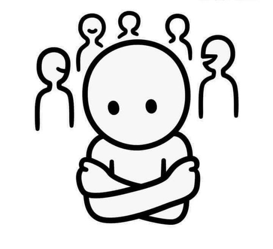
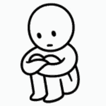
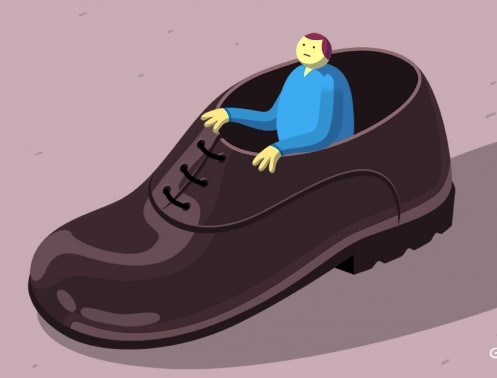
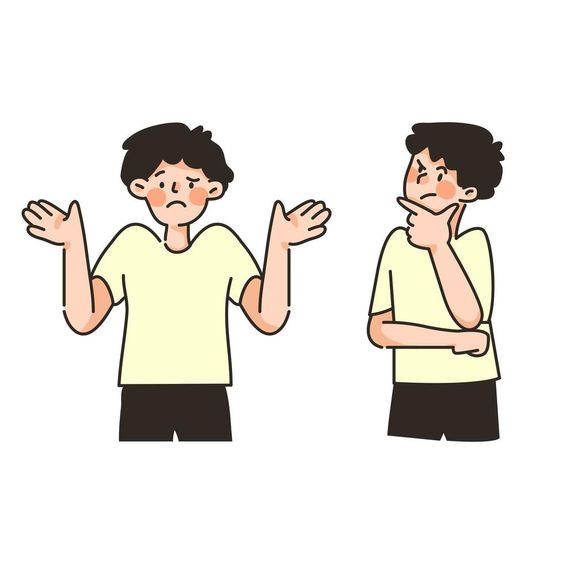

|
Conciencia Social |
|||
¿De que trata la Conciencia Social?  |
Entender a los demas |
Primero yo, Despues yo, y al ultimo yo |
Desde mi perspectiva  |
Toma y daca  |
Cooordinar diferentes puntos de vista  |
¿Tengo prejuicios?  |
Empatia poniendome en los zapatos del otro  |
Hacer el bien sin mirar a quien |
Perspectivas y contextos diferentes  |
¿Quiénes participamos? |
Pensar en grande y Decidirnos a actuar |